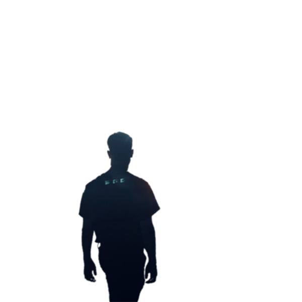
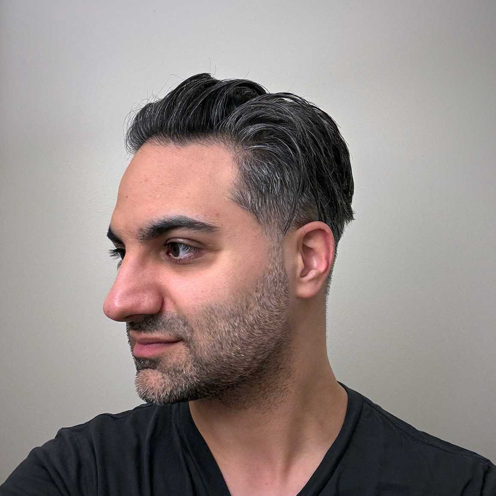

ܫܪܘܟܝܢ
ܐ݇ܨ̈ܦܚ
ܐ݇ܨ̈ܦܚ
ܞ
ܪ݇ܚܵܫܬܵܐ ܠܟܵܠܝܼܦ̮ܘܿܪܢܝܼܵܐ
me
3:01 am
iphone 12 pro
self-taken with a tripod

2:37 pm
iphone 15 pro
front-facing camera
about me
i'm interested in how entwining linguistics+technology can open the door to assyrian language revitalization
work thingies
i'm a software engineer at meta reality labs in the bay area and meta's first unicode technical committee member to represent a minority language
ordered from oldest to newest
family history
-
ancestors on both sides my family fled during sayfo - some were killed on my dad's side
-
in the early 1960s, my mom's dad, nicholas sayad, built the modern church with a spire for the assyrian church of the east's st mary church in iran
monthly usage
number of people using sharrukin.io each month
monthly reports
traffic to sharrukin.io segmented by country, device and more
helpful resources
orthographies authored by richard ishida, fonts maintained by simon cozens
- assyrian
- western assyrian (suryoyo/surayt)
- classical syriac (lishana ateeqa)